Why Filipino Food and Diabetes Is a Specific Problem Bakit ang Pagkaing Pilipino at Diabetes ay Isang Natatanging Problema Ngano ang Pagkaing Pilipino ug Diabetes usa ka Tiyak nga Problema Bakit Ing Pagkaing Pilipino at Diabetes ya Metung a Tiyak a Problema
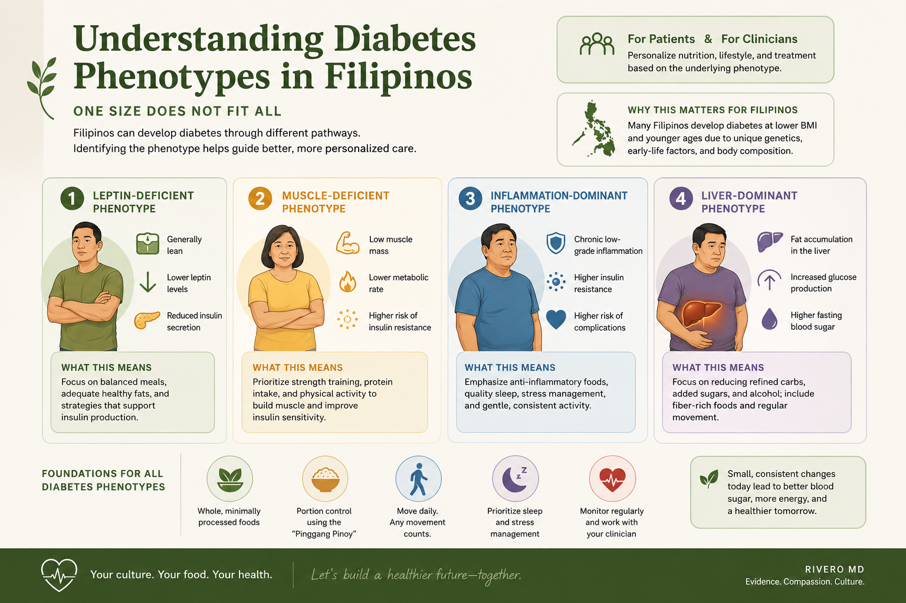
Most diabetic diet advice was written for Western patients eating bread, pasta, and potatoes. Filipino patients eat rice — three times a day, in amounts most guidelines never imagined. This is not a minor cultural footnote. It is the central glycemic challenge of the Filipino diabetic patient, and it requires a guide built from the ground up around sinangag, sinigang, ampalaya, and the palengke. Karamihan sa payo sa diyeta para sa diabetes ay isinulat para sa mga Kanluraninong kumakain ng tinapay, pasta, at patatas. Ang mga pasyenteng Pilipino ay kumakain ng kanin — tatlong beses sa isang araw, sa mga dami na hindi pa naiisip ng karamihang mga alituntunin. Ito ang sentral na hamon sa glycemic ng Pilipinong pasyenteng may diabetes. Kadaghanan sa tambag sa diyeta alang sa diabetes gisulat alang sa mga Kanluraning pasyente nga mokaon og tinapay, pasta, ug patatas. Ang mga pasyenteng Pilipino mokaon og kanin — tulo ka beses sa usa ka adlaw. Mao kini ang sentral nga glycemic nga hagit sa Pilipinong pasyente nga adunay diabetes. Karamihan king payo sa diyeta para king diabetes ya sinulat para king deng Kanluraning pasyente a kumakain ning tinapay, pasta, at patatas. Ing deng Pilipinong pasyente ya kumakain ning kanin — tatlong beses sa metung a aldo. Ini ing sentral a glycemic a hamon ning Pilipinong pasyenteng atin diabetes.
Sinandomeng and jasmine white rice — the varieties on every Filipino table — have a glycemic index (GI) of 72–83, among the highest of any staple grain in the world. The average Filipino with diabetes consumes 4–6 cups of cooked rice daily. That is not a diet — it is a continuous glucose infusion.Ang sinandomeng at jasmine white rice ay may glycemic index na 72–83, kabilang sa pinakamataas sa lahat ng pangunahing butil. Ang karaniwang Pilipino na may diabetes ay kumakain ng 4–6 tasang luto na kanin araw-araw.Ang sinandomeng ug jasmine white rice adunay glycemic index nga 72–83, usa sa pinakataas sa tanan nga punoan nga lugas. Ang kasagarang Pilipino nga adunay diabetes mokaon og 4–6 tasa nga luto nga kanin matag adlaw.Ing sinandomeng at jasmine white rice ya atin glycemic index na 72–83, kabilang king pinakamatas king lahat ning pangunahing butil. Ing karaniwang Pilipino a atin diabetes ya kumakain ning 4–6 tasang luto a kanin aldo-aldo.
Filipino meals front-load glycemic content — rice first, viand second, almost no fiber buffer. The result: sharp postprandial glucose spikes of 230–260 mg/dL after every meal. Many Filipino patients have near-normal fasting glucose but extremely high postprandial levels. Their HbA1c reflects this hidden burden — even when their morning reading looks fine.Ang mga pagkaing Pilipino ay nagsisimula sa mataas na glycemic content — kanin muna, ulam pangalawa, halos walang fiber buffer. Maraming Pilipinong pasyente ang may malapit-normal na fasting glucose ngunit napakaataas na postprandial levels.Ang mga pagkaing Pilipino nagsugod sa taas nga glycemic content — kanin una, ulam ikaduha, halos walay fiber buffer. Daghang Pilipinong pasyente adunay suod-normal nga fasting glucose apan taas kaayo nga postprandial levels.Ing deng pagkaing Pilipino ya nagsisimula sa matas a glycemic content — kanin muna, ulam pangalawa, halos alang fiber buffer. Dakal a Pilipinong pasyente ya atin malapit-normal a fasting glucose ngarud napakamatas a postprandial levels.
Filipino and other Asian patients develop Type 2 diabetes at a BMI of 23–25, compared to 29–30 in Western populations, due to proportionally higher visceral fat even at lower total body weight. Standard "lose weight" advice misses many Filipino patients who appear lean but are metabolically at high risk.Ang mga Pilipino ay nagkakaroon ng T2DM sa BMI na 23–25 dahil sa mas mataas na visceral fat kahit sa mas mababang timbang. Madalas na hindi napansin ng doktor ang mga payat na pasyente na may mataas na panganib.Ang mga Pilipino nagpalambo og T2DM sa BMI nga 23–25 tungod sa mas taas nga visceral fat bisan sa mas ubos nga timbang. Kasagaran wala mapansini sa doktor ang mga manipis nga pasyente nga adunay taas nga peligro.Ing deng Pilipino ya nagkakaroon ning T2DM sa BMI na 23–25 dahil king mas matas a visceral fat kahit sa mas mababang timbang. Madalas a ali napansin ning doktor ing deng manipis a pasyente a atin matas a panganib.
Frying in lard (mantika ng baboy), sweet marinades in tocino and longganisa, condensed milk in kakanin, and sugar in barbecue sauces are not accounted for in any standard diabetic diet reference. The total glycemic load of a Filipino diabetic patient's actual daily diet is significantly underestimated — by both patient and physician.Ang pagpiprito sa mantika ng baboy, matamis na marinade sa tocino at longganisa, condensed milk sa kakanin, at asukal sa barbecue sauce — lahat ito ay hindi isinasaalang-alang sa anumang pamantayang diabetic diet reference.Ang pagprito sa mantika ng baboy, tam-is nga marinade sa tocino ug longganisa, condensed milk sa kakanin, ug asukal sa barbecue sauce — wala kini giisip sa bisan unsang sumbanan nga diabetic diet reference.Ing pagluluto sa mantika ning baboy, matamis a marinade sa tocino at longganisa, condensed milk sa kakanin, at asukal sa barbecue sauce — lahat ini ali isinasaalang-alang king anumang pamantayang diabetic diet reference.
Blood Sugar Basics: What You're Trying to Control Mga Pangunahing Kaalaman sa Asukal sa Dugo: Ano ang Sinisikap Mong Kontrolin Mga Batayan sa Asukal sa Dugo: Unsa ang Imong Gisikop nga Kontrolon Deng Pangunahing Kaalaman king Asukal sa Daya: Anu ing Sinisikap Mong Kontrolin
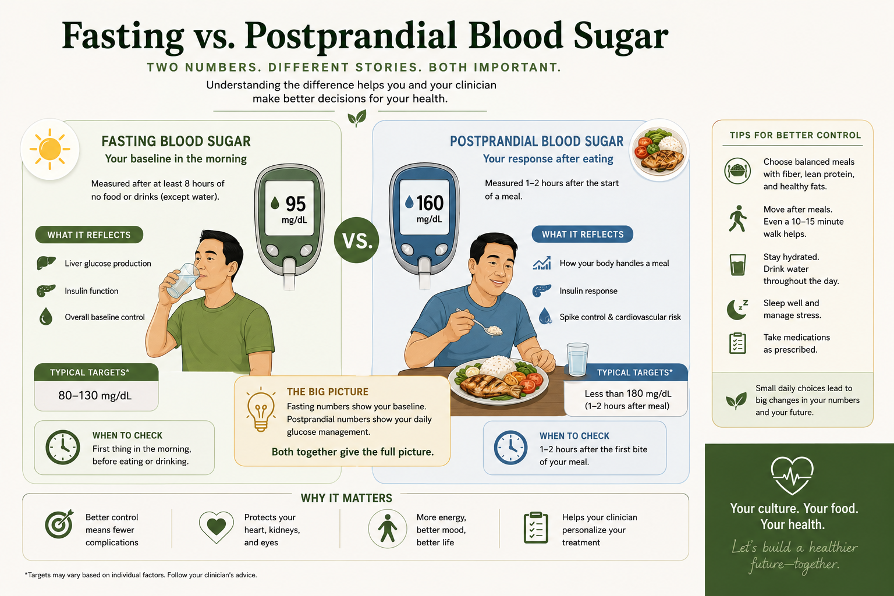
Measured after at least 8 hours without eating. Target: 80–130 mg/dL. Most patients focus only on this — but it misses the postprandial problem entirely if the test is done at dawn before breakfast.Sinusukat pagkatapos ng hindi bababa sa 8 oras na hindi kumain. Target: 80–130 mg/dL. Karamihang pasyente ay nagtutuon lamang dito — ngunit nawawala ang postprandial na problema.Gisukat pagkahuman sa labing 8 oras nga walay pagkaon. Target: 80–130 mg/dL. Kadaghanan sa mga pasyente nagpunting lamang dinhi — apan gisayop ang postprandial nga problema.Sinusukat kapabanuan ning hindi bababa sa 8 oras a ali kumain. Target: 80–130 mg/dL. Karamihan a pasyente ya nagtutuon lamang dito — ngarud napalampas ing postprandial a problema.
Measured exactly 2 hours after the first bite. Target: below 180 mg/dL. This is the number that reveals the rice problem. Many Filipino patients with "controlled" fasting glucose have postprandial levels of 220–260 mg/dL after a standard rice meal.Sinusukat eksaktong 2 oras pagkatapos ng unang kagat. Target: sa ibaba ng 180 mg/dL. Ito ang numero na nagbubunyag ng problema sa kanin.Gisukat eksaktong 2 oras pagkahuman sa unang kagat. Target: ubos sa 180 mg/dL. Kini ang numero nga nagbubunyag sa problema sa kanin.Sinusukat eksaktong 2 oras kapabanuan ning unang kagat. Target: sa ilalam ning 180 mg/dL. Ini ing numero a nagbubunyag ning problema sa kanin.
Glucose attaches to hemoglobin over its 90-day lifespan. HbA1c measures the average percentage of hemoglobin carrying glucose over the past 3 months — it cannot be fooled by a single good day before the blood test. Target: below 7% for most; 7–8% for the elderly. Why does sugar get stuck to hemoglobin? Because blood glucose is chronically elevated — and glucose, like caramel, coats everything it touches.Ang glucose ay nakakapit sa hemoglobin sa loob ng 90-araw na buhay nito. Sinusukat ng HbA1c ang average na porsyento ng hemoglobin na nagdadala ng glucose sa nakalipas na 3 buwan — hindi ito niloloko ng isang magandang araw. Target: mas mababa sa 7%.Ang glucose nagdikit sa hemoglobin sa tibuok 90-adlaw nga kinabuhi niini. Gisukat sa HbA1c ang average nga porsyento sa hemoglobin nga nagdala sa glucose sa miaging 3 buwan. Target: ubos sa 7%.Ing glucose ya kumapit sa hemoglobin king loob ning 90-araw a buhay nini. Sinusukat ning HbA1c ing average a porsyento ning hemoglobin a nagdadala ning glucose sa nakalipas a 3 bulan. Target: mas mababa sa 7%.
Spend more than 70% of the day between 70–180 mg/dL. A single standard Filipino rice meal (2 cups white rice) can push blood sugar above 180 mg/dL for 3–4 hours. Multiply by three meals daily — and you can see why time-in-range collapses on a typical Filipino diabetic diet.Gumastos ng higit sa 70% ng araw sa pagitan ng 70–180 mg/dL. Ang isang karaniwang pagkaing Pilipino na may 2 tasang puting kanin ay maaaring magtulak ng asukal sa dugo nang higit sa 180 mg/dL sa loob ng 3–4 oras.Gusto og labaw sa 70% sa adlaw tali sa 70–180 mg/dL. Ang usa ka sumbanan nga pagkaing Pilipino nga adunay 2 tasa nga puting kanin mahimong magtulod sa asukal sa dugo og labaw sa 180 mg/dL sulod sa 3–4 oras.Gugustuhin ning higit sa 70% ning aldo sa panagsaliwan ning 70–180 mg/dL. Ing metung a karaniwang pagkaing Pilipino na atin 2 tasang puting kanin ya maaaring magtulak ning asukal sa daya pataas sa 180 mg/dL sa loob ning 3–4 oras.
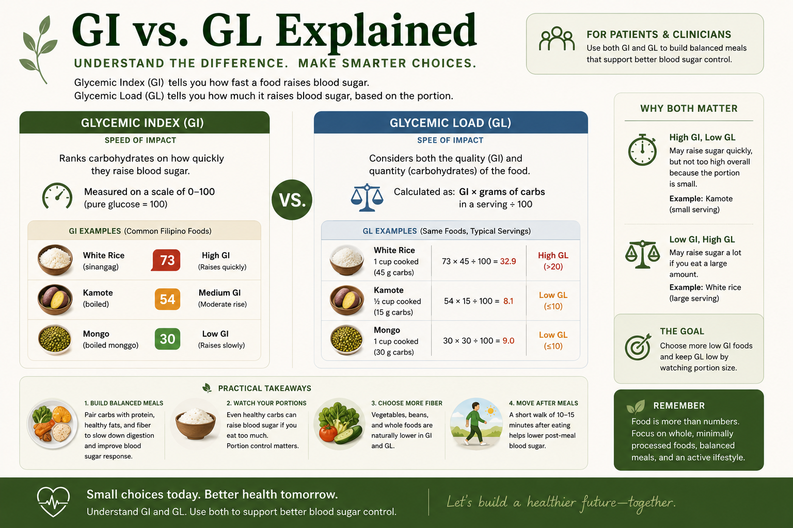
The Rice Question: What Every Filipino Diabetic Patient Needs to Know Ang Tanong sa Kanin: Ano ang Kailangan Malaman ng Bawat Pilipinong Pasyenteng May Diabetes Ang Pangutana sa Kanin: Unsa ang Kinahanglan Mahibal-an sa Matag Pilipinong Pasyente nga adunay Diabetes Ing Tanong sa Kanin: Anu ing Kailangan Maalaman ning Bawat Pilipinong Pasyenteng Atin Diabetes
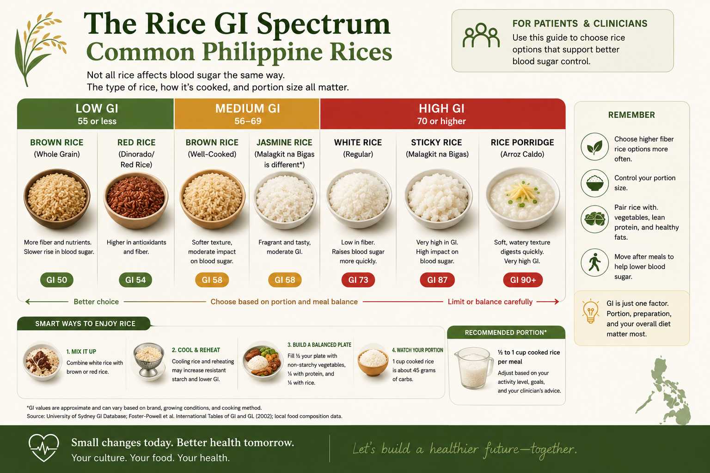
| Rice TypeUri ng KaninKlase sa KaninUri ning Kanin | GI | GL (1 cup cooked)GL (1 tasang luto)GL (1 tasa nga luto)GL (1 tasang luto) | NotesMga TalaMga NotaDeng Tala |
|---|---|---|---|
| White rice (sinandomeng, jasmine)Puting kanin (sinandomeng, jasmine)Puting kanin (sinandomeng, jasmine)Puting kanin (sinandomeng, jasmine) | 72–83 | HighMataasTaasMatas | Standard staple; highest glycemic impact of all common grainsPangunahing pagkain; pinakamataas na glycemic impactPunoan nga pagkaon; pinakataas nga glycemic impactPangunahing pagkain; pinakamatas a glycemic impact |
| Parboiled riceParboiled riceParboiled riceParboiled rice | 47–55 | ModerateKatamtamanKatamtamanKatamtaman | Available in supermarkets; good practical switchMakita sa mga supermarket; magandang papalitanMakita sa mga supermarket; maayong pagbalhinMakita sa deng supermarket; maayos a pagpapalit |
| Brown riceBrown riceBrown riceBrown rice | 50–55 | ModerateKatamtamanKatamtamanKatamtaman | Widely available; best practical switch from white riceMalawak na makita; pinakamainam na papalitanHalapad makita; pinakamaayo nga pagbalhinMalawak a makita; pinakamainam a pagpapalit |
| Red rice (Ifugao heirloom)Red rice (Ifugao heirloom)Red rice (Ifugao heirloom)Red rice (Ifugao heirloom) | 55–60 | ModerateKatamtamanKatamtamanKatamtaman | Good nutritional profile; health stores and some palengkeMagandang nutritional profile; health stores at ilang palengkeMaayong nutritional profile; health stores ug pipila ka palengkeMaayos a nutritional profile; health stores at ilan a palengke |
| Black rice (pirurutong)Black rice (pirurutong)Black rice (pirurutong)Black rice (pirurutong) | 42–45 | Low–ModerateMababa–KatamtamanUbos–KatamtamanMababa–Katamtaman | High anthocyanin antioxidants; try mixed with white rice or as sinangagMataas na anthocyanin; subukan bilang sinangag o halo sa puting kaninTaas nga anthocyanin; sulayi nga itrong sa puting kanin o sinangagMatas a anthocyanin; subukan bilang sinangag o halo sa puting kanin |
| Cauliflower riceCauliflower riceCauliflower riceCauliflower rice | 15 | Very LowNapakababaUbos kaayoNapakababa | Best glycemic substitute; grate raw cauliflower; sauté with garlic for sinangag-stylePinakamainam na kapalit; gadngon ang hilaw na cauliflower; igisa sa bawangPinakamaayo nga substitute; gadngon ang hilaw nga cauliflower; igisa sa bawangPinakamainam a substitute; gadngon ing hilaw a cauliflower; igisa sa bawang |
| Shirataki / konjac riceShirataki / konjac riceShirataki / konjac riceShirataki / konjac rice | <10 | NegligibleHalos walaHalos walaHalos wala | Available in major supermarkets and online; texture adjustment neededMakita sa mga pangunahing supermarket; kailangan ang pag-aayon sa textureMakita sa mga mayor nga supermarket; kinahanglan ang pag-ayo sa textureMakita sa deng pangunahing supermarket; kailangan ing pag-aayon sa texture |
Cooking rice and then refrigerating it for 12–24 hours before reheating converts some digestible starch into resistant starch — not absorbed in the small intestine, acting like fiber. This lowers the effective GI by 10–15 points. Sinangag made from day-old refrigerated rice has a meaningfully lower blood sugar impact than freshly cooked rice. This is an unintentional metabolic benefit embedded in Filipino food culture — and you can make it intentional.Ang pagluluto ng kanin at pagpapalamig nito ng 12–24 oras bago muling painitin ay nagko-convert ng ilang starch sa resistant starch. Nagpapababa ito ng effective na GI ng 10–15 puntos. Ang sinangag mula sa malamig na kanin ay may mas mababang epekto sa asukal sa dugo.Ang pagluto sa kanin ug pagpabugnaw niini og 12–24 oras sa wala pa muhulat nagtambayog sa pipila sa starch ngadto sa resistant starch. Nagpaubos kini sa effective na GI og 10–15 puntos. Ang sinangag gikan sa mabugnaw nga kanin adunay mas ubos nga epekto sa asukal sa dugo.Ing pagluluto ning kanin at pagpapalamig nini ning 12–24 oras bago muling painitin ya nag-convert ning ilan a starch sa resistant starch. Nagpapababa iti ning effective a GI ning 10–15 puntos. Ing sinangag mula sa malamig a kanin ya atin mas mababang epekto sa asukal sa daya.
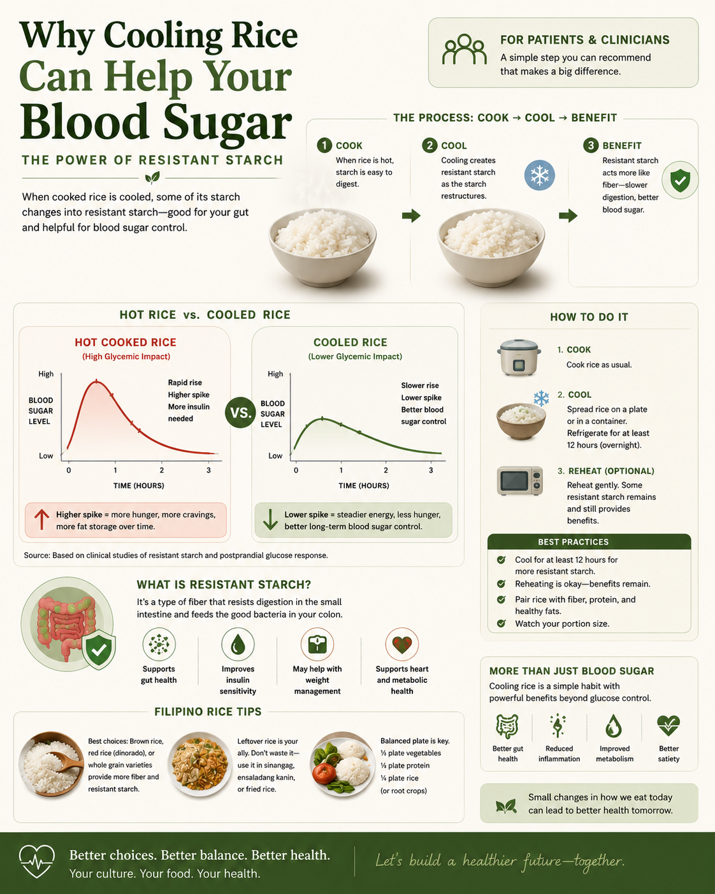
- Target portion: ½ cup cooked rice per meal. Do not eliminate rice suddenly — gradual reduction prevents rebound eating.Target na dami: ½ tasa ng luto na kanin bawat kain. Huwag biglang titigilan ang pagkain ng kanin.Target nga dami: ½ tasa nga luto nga kanin matag kain. Ayaw biglang hunong sa pagkaon og kanin.Target a dami: ½ tasa ning luto a kanin bawat kain. Ding biglang itigil ing pagkain ning kanin.
- Always eat rice last: Vegetables → Protein → Rice. Research shows this lowers postprandial glucose by 30–40% without changing total food intake.Laging kainin ang kanin sa huli: Gulay → Protina → Kanin. Nagpapababa ito ng postprandial glucose ng 30–40%.Kanunay kaonon ang kanin sa katapusan: Utanon → Protina → Kanin. Nagpaubos kini sa postprandial glucose og 30–40%.Laging kainin ing kanin sa huli: Gulay → Protina → Kanin. Nagpapababa iti ning postprandial glucose ning 30–40%.
- Switch the type: Brown rice is the most practical and affordable upgrade. Available in most supermarkets and major palengke.Palitan ang uri: Ang brown rice ang pinaka-praktikal at abot-kayang upgrade.Ilisan ang klase: Ang brown rice ang pinaka-praktikal ug abot-kaya nga upgrade.Palitan ing uri: Ing brown rice ing pinaka-praktikal at abot-kayang upgrade.
- Use the cooling trick: Cook a large batch, refrigerate overnight, reheat as sinangag next morning. Lower GI, same taste.Gamitin ang cooling trick: Magluto ng malaking batch, palamig magdamag, initin bilang sinangag kinaumagahan.Gamita ang cooling trick: Magluto og daghang batch, pabugnawa magdamag, initan isip sinangag sa sunod buntag.Gamitin ing cooling trick: Magluto ning malaking batch, palamig magdamag, initin bilang sinangag kinaumagahan.
- Mix with kamote: Replace half your rice portion with boiled purple or orange kamote. Maintains satiety, reduces glycemic load, adds fiber and beta-carotene.Paghaluin ng kamote: Palitan ang kalahati ng kanin ng pinakuluang kamote. Nagpapanatili ng kasiyahan, nagpapababa ng glycemic load.Itrong og kamote: Balihi ang katunga sa kanin og pinakuluang kamote. Nagpadayon sa kasiguro, nagpaubos sa glycemic load.Paghaluin ning kamote: Palitan ing kalahati ning kanin ning pinakuluang kamote. Nagpapanatili ning kasiyahan, nagpapababa ning glycemic load.
The Filipino Food Guide: Green, Yellow, Red Ang Gabay sa Pagkaing Pilipino: Berde, Dilaw, Pula Ang Giya sa Pagkaing Pilipino: Berde, Dilaw, Pula Ing Gabay king Pagkaing Pilipino: Berde, Dilaw, Pula
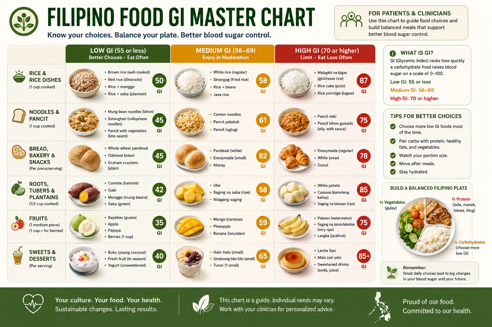
🟢 Eat Freely — Low Glycemic Impact🟢 Kumain nang Malaya — Mababang Glycemic Impact🟢 Kaon nga Gawasnon — Ubos nga Glycemic Impact🟢 Kumain Nang Malaya — Mababang Glycemic Impact
Vegetables — Your Most Powerful Glycemic BufferMga Gulay — Ang Pinaka-Makapangyarihang Glycemic BufferMga Utanon — Ang Pinakamalakas nga Glycemic BufferDeng Gulay — Ing Pinaka-Makapangyarihang Glycemic Buffer
Most Filipino diabetic patients eat far fewer vegetables than they realise. Vegetables are not just "healthy" — they are the most powerful glycemic buffer available. Fiber slows glucose absorption, volume creates satiety, and many Philippine varieties have additional anti-hyperglycemic properties.Karamihan sa mga Pilipinong pasyenteng may diabetes ay kumakain ng mas kaunting gulay kaysa sa kanilang iniisip. Ang mga gulay ay hindi lamang "malusog" — sila ang pinaka-makapangyarihang glycemic buffer.Kadaghanan sa mga Pilipinong pasyente nga adunay diabetes mokaon og mas kaunti nga utanon kaysa sa ilang gihunahuna. Ang mga utanon dili lamang "malusog" — sila ang pinakamalakas nga glycemic buffer.Karamihan king deng Pilipinong pasyenteng atin diabetes ya kumakain ning mas kaunting gulay kaysa sa kanilang iniisip. Ing deng gulay ali lamang "malusog" — sila ing pinaka-makapangyarihang glycemic buffer.
Proteins — Your Best Friend at Every MealMga Protina — Ang Pinakamabuting Kaibigan sa Bawat KainMga Protina — Ang Pinakamaayong Kauban sa Matag KainDeng Protina — Ing Pinakamabuting Kaibigan sa Bawat Kain
Protein has virtually zero glycemic index. Every gram of protein at a rice-heavy meal helps blunt the glucose spike and increases satiety. Prioritise fish, eggs, and tofu — affordable, widely available, and metabolically superior to processed pork products.Ang protina ay halos walang glycemic index. Ang bawat gramo ng protina sa isang pagkaing may maraming kanin ay tumutulong na mapababa ang glucose spike. Unahin ang isda, itlog, at tokwa.Ang protina halos walay glycemic index. Ang matag gramo sa protina sa usa ka pagkaon nga adunay daghang kanin nagtabang sa pagpahina sa glucose spike. Unahon ang isda, itlog, ug tokwa.Ing protina ya halos alang glycemic index. Bawat gramo ning protina sa metung a pagkaing atin dakal a kanin ya tumutulong a mapababa ing glucose spike. Unahin ing isda, itlog, at tokwa.
🟡 Limit Portions — Moderate Glycemic Impact🟡 Limitahan ang Dami — Katamtamang Glycemic Impact🟡 Limitahan ang Dami — Katamtamang Glycemic Impact🟡 Limitahan ing Dami — Katamtamang Glycemic Impact
🔴 Avoid or Minimise — High Glycemic / High Risk🔴 Iwasan o I-minimize — Mataas na Glycemic / Mataas na Panganib🔴 Likayi o I-minimize — Taas nga Glycemic / Taas nga Peligro🔴 Iwasan o I-minimize — Matas a Glycemic / Matas a Panganib
Star fruit contains caramboxin and oxalic acid, normally excreted by healthy kidneys. In patients with CKD Stage 3 or above (creatinine typically above 1.5–2.0 mg/dL), these compounds accumulate and can cause irreversible neurological damage, seizures, and acute kidney injury — even from a single fruit. If you have diabetes and any kidney involvement, do not eat balimbing under any circumstances. If unsure, ask your doctor for a creatinine test before eating it.Ang balimbing ay naglalaman ng caramboxin at oxalic acid. Sa mga pasyenteng may CKD Stage 3 o pataas, ang mga compound na ito ay nag-iipon at maaaring magdulot ng hindi na maibabalik na pinsala sa nerbyo, seizures, at acute kidney injury — kahit mula sa isang bunga.Ang balimbing naglalaman og caramboxin ug oxalic acid. Sa mga pasyente nga adunay CKD Stage 3 o pataas, kining mga compound nagtipon ug mahimong makahulugang dili na mabawi nga kadaot sa nerbyo, seizures, ug acute kidney injury — bisan gikan sa usa ka bunga.Ing balimbing ya naglalaman ning caramboxin at oxalic acid. King deng pasyenteng atin CKD Stage 3 o pataas, ing deng compound a ini ya nag-iipon at maaaring magdulot ning hindi na mababawi a pinsala sa nerbyo, seizures, at acute kidney injury — kahit mula sa metung a bunga.
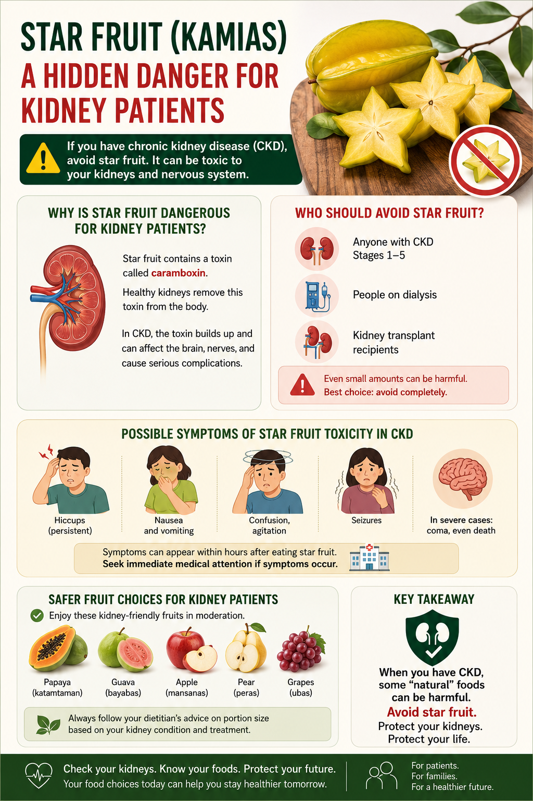
Meal Structuring: The Filipino Glycemic Plate & 7-Day Plan Pagbubuo ng Pagkain: Ang Filipino Glycemic Plate at 7-Araw na Plano Pagpagana sa Pagkaon: Ang Filipino Glycemic Plate ug 7-Adlaw nga Plano Pagbubuo ning Pagkain: Ing Filipino Glycemic Plate at 7-Araw a Plano
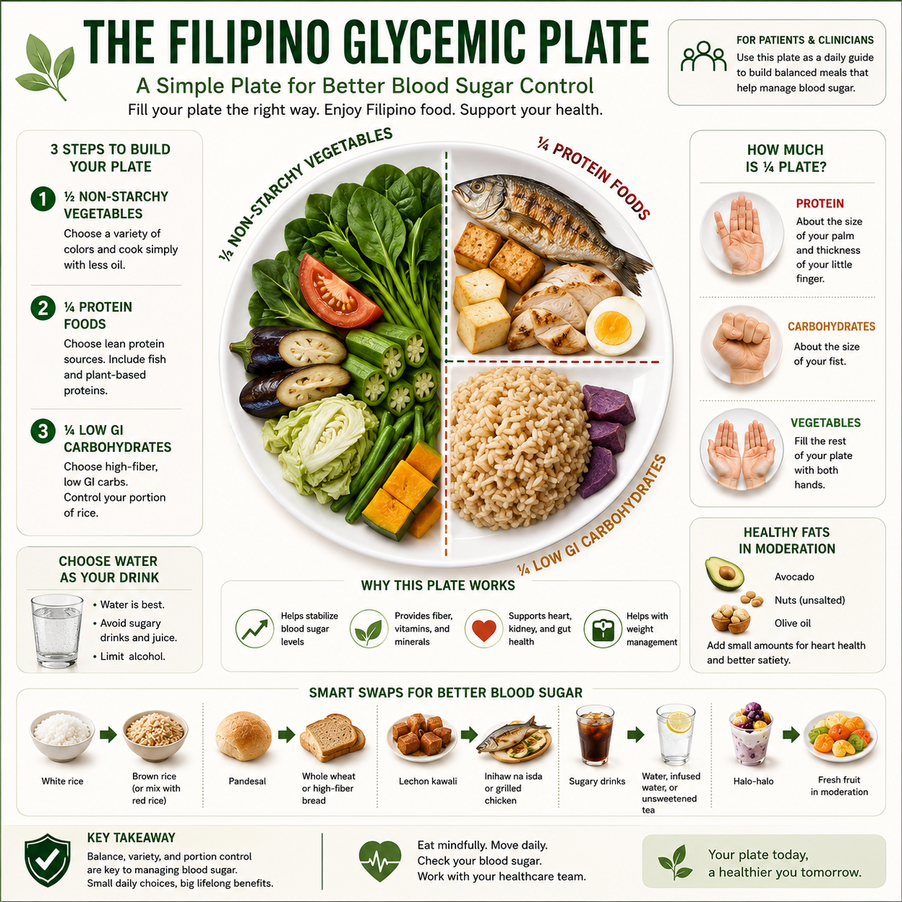
Gulay muna → Ulam → Kanin huling-huli Gulay muna → Ulam → Kanin huling-huli Utanon una → Ulam → Kanin sa katapusan Gulay muna → Ulam → Kanin huling-huli
Research by Imai et al. demonstrated that eating carbohydrates last — after vegetables and protein — reduces the postprandial glucose peak by 30–40% compared to eating rice first. The fiber from vegetables slows gastric emptying; protein triggers an early insulin response; by the time rice reaches the small intestine, the metabolic environment is already primed. The total amount of food eaten is identical. Only the order changes. This is the single most impactful, zero-cost dietary change a Filipino diabetic patient can make.Ipinakita ng pananaliksik ni Imai et al. na ang pagkain ng carbohydrates sa huli ay nagpapababa ng postprandial glucose peak ng 30–40%. Ang kabuuang dami ng pagkain ay pareho. Ang pagkakasunud-sunod lamang ang nagbabago.Ang panukiduki ni Imai et al. nagpakita nga ang pagkaon sa carbohydrates sa katapusan nagpaubos sa postprandial glucose peak og 30–40%. Ang total nga dami sa pagkaon pareho. Ang sunod-sunod lamang ang nagbag-o.Ipinakita ning pananaliksik ni Imai et al. a ing pagkain ning deng carbohydrates sa huli ya nagpapababa ning postprandial glucose peak ning 30–40%. Ing kabuuang dami ning pagkain ya pareho. Ing pagkakasunud-sunod lamang ing nagbabago.
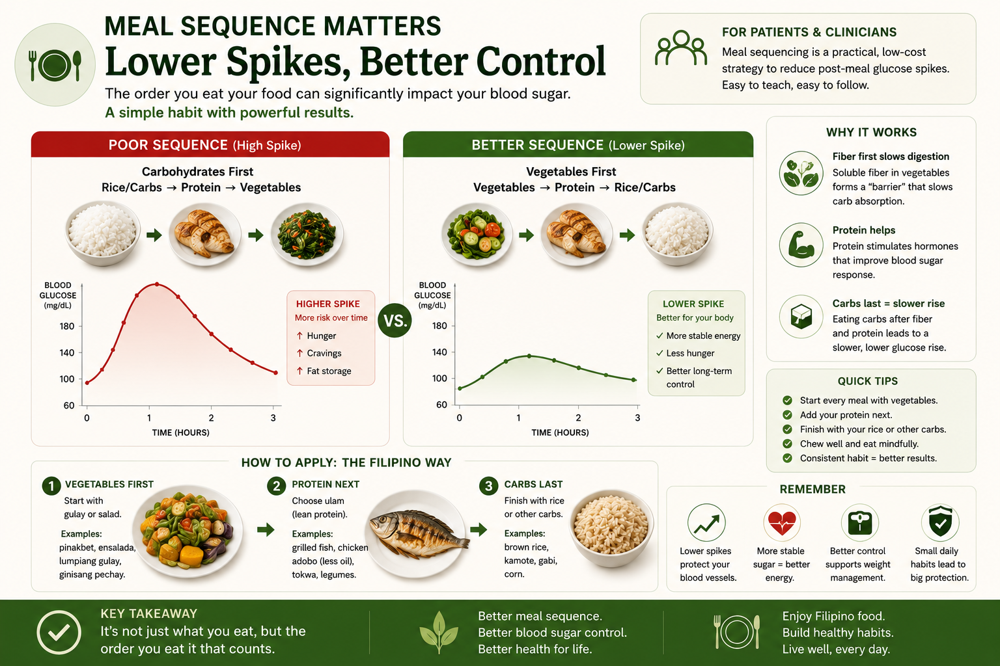
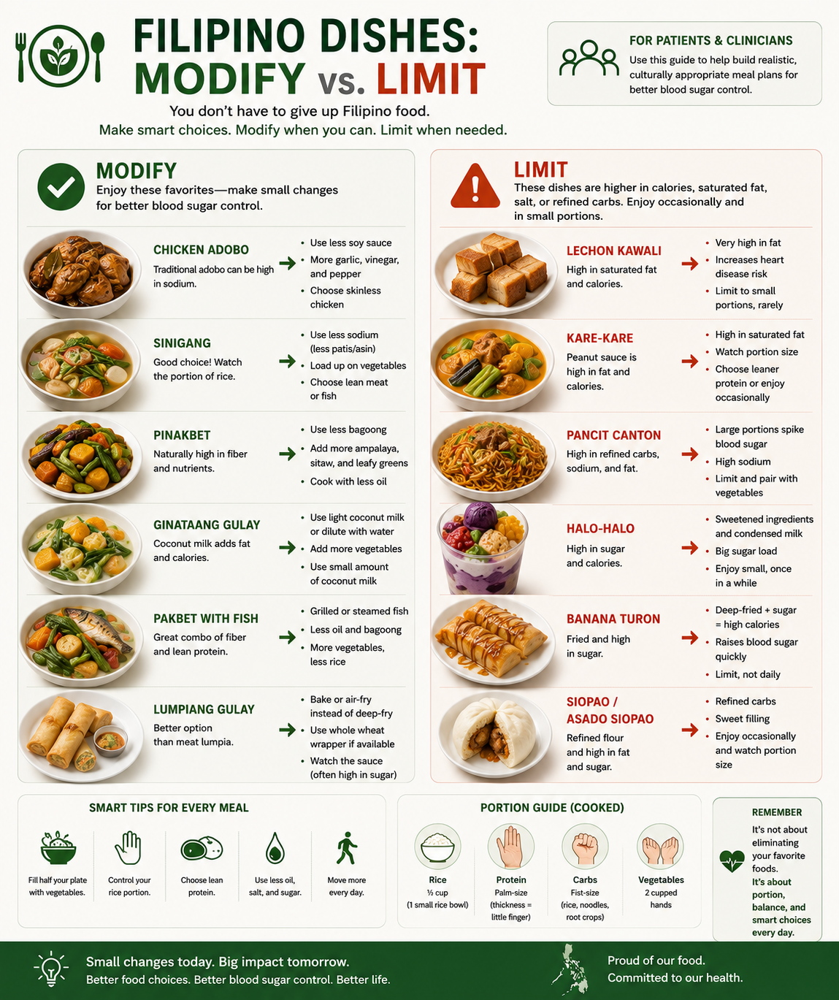
✅ Modify & Enjoy✅ Baguhin at I-enjoy✅ Baguhin ug I-enjoy✅ Baguhin at I-enjoy
- Sinigang — One of the best dishes for glycemic control. High vegetable content, protein-rich broth, tamarind has negligible glycemic impact.Isa sa pinakamainam na putahe para sa glycemic control. Mataas na gulay, mayaman sa protina.Usa sa pinakamaayo nga putahe alang sa glycemic control. Taas nga utanon, dato sa protina.Metung king pinakamainam a putahe para king glycemic control. Matas a gulay, dato sa protina.
- Tinola — Excellent. Malunggay + chicken in clear broth. Add more malunggay and green papaya; less chicken skin.Mahusay. Malunggay + manok sa malinaw na sabaw. Dagdagan ang malunggay at hilaw na papaya; bawasan ang balat.Maayo. Malunggay + manok sa tin-aw nga sabaw. Dugangi ang malunggay ug hilaw nga papaya; pakurion ang panit.Mahusay. Malunggay + manok sa maliwanag a sabaw. Dagdagan ing malunggay at hilaw a papaya; bawasan ing balat.
- Adobo — Reduce or eliminate sugar. Use less oil. Add more vegetables. One-piece pork serving with a large vegetable base is manageable.Bawasan o alisin ang asukal. Gumamit ng mas kaunting langis. Dagdagan ang gulay.Pakurion o tanggala ang asukal. Gamita og mas gamay nga lana. Dugangi ang utanon.Bawasan o alisin ing asukal. Gumamit ning mas kaunting langis. Dagdagan ing gulay.
- Kare-kare — Peanut sauce and vegetables are fine. Limit bagoong to 1 tsp (very high sodium). Ox tail is acceptable as protein in moderation.Ang peanut sauce at mga gulay ay ayos. Limitahan ang bagoong sa 1 kutsarita.Ang peanut sauce ug mga utanon okay. Limitahan ang bagoong sa 1 kutsarita.Ing peanut sauce at deng gulay ya ayos. Limitahan ing bagoong sa 1 kutsarita.
- Monggo guisado — One of the most diabetic-friendly traditional Filipino dishes. High protein, high fiber, very low GI. Do not add sugar or condensed milk.Isa sa pinaka-magandang tradisyonal na putahe para sa may diabetes. Huwag magdagdag ng asukal o condensed milk.Usa sa pinaka-maayo nga tradisyonal nga putahe alang sa may diabetes. Ayaw idugang og asukal o condensed milk.Metung king pinaka-maayos a tradisyonal a putahe para king atin diabetes. Ding idagdag ning asukal o condensed milk.
⚠️ Limit / Occasional Only⚠️ Limitahan / Paminsan-minsan Lamang⚠️ Limitahan / Panalagsa Lamang⚠️ Limitahan / Paminsan-minsan Lamang
- Afritada / Mechado — Tomato sauce + potato moderate glycemic load. Acceptable with portion control and limited potato.Moderate glycemic load. Katanggap-tanggap na may kontrol sa bahagi at limitadong patatas.Moderate glycemic load. Acceptable uban ang kontrol sa bahin ug limitadong patatas.Moderate glycemic load. Katanggap-tanggap na atin kontrol sa bahagi at limitadong patatas.
- Caldereta — High fat from pork and liver spread. High saturated fat, high sodium. Reserve for special occasions.Mataas na taba mula sa baboy at liver spread. Espesyal na okasyon lamang.Taas nga taba gikan sa baboy ug liver spread. Espesyal nga okasyon lamang.Matas a taba mula sa baboy at liver spread. Espesyal a okasyon lamang.
- Crispy pata / Lechon — Very high saturated fat and sodium. Lipid load worsens insulin resistance over time. Rare occasion only.Napakataas na saturated fat at sodium. Nagpapalala ng insulin resistance. Bihirang okasyon lamang.Taas kaayo nga saturated fat ug sodium. Nagpasamot sa insulin resistance. Bihirang okasyon lamang.Napakamatas a saturated fat at sodium. Nagpapalala ning insulin resistance. Bihirang okasyon lamang.
- Halo-halo — Glycemic load equivalent to 3–4 cups of white rice. Once or twice a year maximum, small serving, check blood sugar 2 hours later.Glycemic load katumbas ng 3–4 tasa ng puting kanin. Isang o dalawang beses sa isang taon, maliit na bahagi.Glycemic load katumbas sa 3–4 tasa sa puting kanin. Usa o duha ka beses sa usa ka tuig, gamay nga bahin.Glycemic load katumbas ning 3–4 tasa ning puting kanin. Metung o dalawang beses sa metung a banua, maliit a bahagi.
7-Day Filipino Diabetic Meal Plan7-Araw na Plano sa Pagkain para sa Pilipinong May Diabetes7-Adlaw nga Plano sa Pagkaon alang sa Pilipino nga adunay Diabetes7-Araw a Plano sa Pagkain para king Pilipinong Atin Diabetes
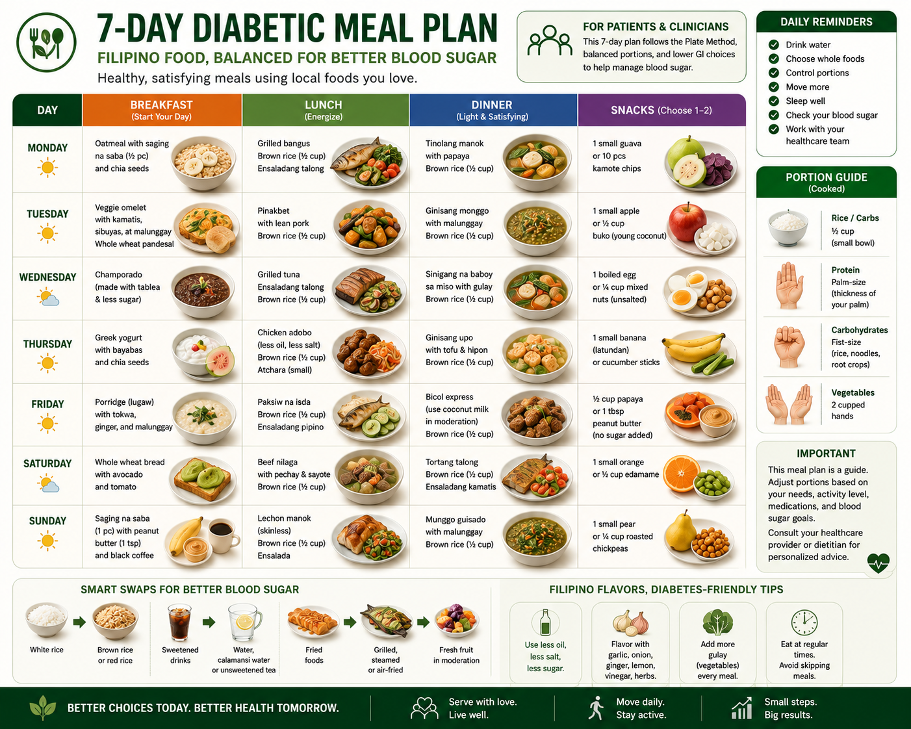
| DayArawAdlawAraw | BreakfastAlmusalPamahawAlmusal | LunchTanghalianPangudtoTanghalian | SnackMeriendaMeryendaMerienda | DinnerHapunanPanihaponHapunan |
|---|---|---|---|---|
| MonLunLunLun | Scrambled eggs (2) + kangkong sauté + 1 pan de sal + black coffeeScrambled eggs (2) + kangkong guisado + 1 pan de sal + black coffeeScrambled eggs (2) + kangkong guisado + 1 pan de sal + black coffeeScrambled eggs (2) + kangkong guisado + 1 pan de sal + black coffee | Sinigang na bangus + ½ cup brown rice + ensaladaSinigang na bangus + ½ tasa brown rice + ensaladaSinigang nga bangus + ½ tasa brown rice + ensaladaSinigang na bangus + ½ tasa brown rice + ensalada | Boiled kamote (120g) + calamansi waterPinakuluang kamote (120g) + calamansi waterPinakuluang kamote (120g) + calamansi waterPinakuluang kamote (120g) + calamansi water | Tinolang manok + malunggay + ½ cup sinangag (day-old brown rice)Tinolang manok + malunggay + ½ tasa sinangag (brown rice)Tinolang manok + malunggay + ½ tasa sinangag (brown rice)Tinolang manok + malunggay + ½ tasa sinangag (brown rice) |
| TueMarMarMar | Arroz caldo (½ cup, extra malunggay) + hard-boiled egg white + salabatArroz caldo (½ tasa, dagdag malunggay) + hard-boiled egg white + salabatArroz caldo (½ tasa, dugang malunggay) + hard-boiled egg white + salabatArroz caldo (½ tasa, extra malunggay) + hard-boiled egg white + salabat | Monggo guisado (no sugar) + ½ cup red rice + pinakbetMonggo guisado (walang asukal) + ½ tasa red rice + pinakbetMonggo guisado (walay asukal) + ½ tasa red rice + pinakbetMonggo guisado (alang asukal) + ½ tasa red rice + pinakbet | Unsalted mani (~30g)Walang asin na mani (~30g)Walay asin nga mani (~30g)Alang asin a mani (~30g) | Grilled tilapia + ampalaya guisado + ½ cup brown riceInihaw na tilapia + ampalaya guisado + ½ tasa brown riceInihaw nga tilapia + ampalaya guisado + ½ tasa brown riceInihaw a tilapia + ampalaya guisado + ½ tasa brown rice |
| WedMiyMiyMiy | Tokwa scramble (tokwa + eggs + sitaw) + calamansi waterTokwa scramble (tokwa + itlog + sitaw) + calamansi waterTokwa scramble (tokwa + itlog + sitaw) + calamansi waterTokwa scramble (tokwa + itlog + sitaw) + calamansi water | Kare-kare (vegetables + small oxtail, 1 tsp bagoong) + ½ cup brown riceKare-kare (mga gulay + maliit na oxtail, 1 kutsarita bagoong) + ½ tasa brown riceKare-kare (mga utanon + gamay nga oxtail, 1 kutsarita bagoong) + ½ tasa brown riceKare-kare (deng gulay + maliit a oxtail, 1 kutsarita bagoong) + ½ tasa brown rice | ½ papaya (cubed) + unsweetened green tea½ papaya (tinadtad) + unsweetened green tea½ papaya (tinadtad) + unsweetened green tea½ papaya (tinadtad) + unsweetened green tea | Steamed bangus + pechay with garlic + ½ cup cauliflower ricePinasingawang bangus + pechay na may bawang + ½ tasa cauliflower ricePinasingawang bangus + pechay nga adunay bawang + ½ tasa cauliflower ricePinasingawang bangus + pechay na atin bawang + ½ tasa cauliflower rice |
| ThuHuwHuwHuw | Boiled eggs (2) + kamote tops sauté + black coffeePinakuluang itlog (2) + talbos ng kamote guisado + black coffeePinakuluang itlog (2) + talbos sa kamote guisado + black coffeePinakuluang itlog (2) + talbos ning kamote guisado + black coffee | Sardinas in tomato sauce + kangkong guisado + ½ cup brown riceSardinas sa tomato sauce + kangkong guisado + ½ tasa brown riceSardinas sa tomato sauce + kangkong guisado + ½ tasa brown riceSardinas sa tomato sauce + kangkong guisado + ½ tasa brown rice | Tokwa salad (tokwa + pipino + calamansi dressing, no sugar)Salad na tokwa (tokwa + pipino + calamansi dressing, walang asukal)Salad nga tokwa (tokwa + pipino + calamansi dressing, walay asukal)Salad ning tokwa (tokwa + pipino + calamansi dressing, alang asukal) | Sinigang na hipon + sitaw + talong + ½ cup brown riceSinigang na hipon + sitaw + talong + ½ tasa brown riceSinigang nga hipon + sitaw + talong + ½ tasa brown riceSinigang na hipon + sitaw + talong + ½ tasa brown rice |
| FriBiyBiyBiy | Champorado (reduced sugar, ½ cup rice) + tuyo (1 pc) + salabatChamporado (bawas asukal, ½ tasa kanin) + tuyo (1 piraso) + salabatChamporado (bawas asukal, ½ tasa kanin) + tuyo (1 piraso) + salabatChamporado (bawas asukal, ½ tasa kanin) + tuyo (1 piraso) + salabat | Tinolang manok + malunggay + ½ cup sinangagTinolang manok + malunggay + ½ tasa sinangagTinolang manok + malunggay + ½ tasa sinangagTinolang manok + malunggay + ½ tasa sinangag | Guyabano slices (½ cup, no added sugar)Mga hiwa ng guyabano (½ tasa, walang asukal)Mga hiwa sa guyabano (½ tasa, walay asukal)Deng hiwa ning guyabano (½ tasa, alang asukal) | Grilled tanigue + pinakbet + ½ cup red riceInihaw na tanigue + pinakbet + ½ tasa red riceInihaw nga tanigue + pinakbet + ½ tasa red riceInihaw a tanigue + pinakbet + ½ tasa red rice |
| SatSabSabSab | Eggs + ampalaya guisado + ½ cup sinangag (day-old brown rice) + black coffeeItlog + ampalaya guisado + ½ tasa sinangag + black coffeeItlog + ampalaya guisado + ½ tasa sinangag + black coffeeItlog + ampalaya guisado + ½ tasa sinangag + black coffee | Adobong manok (reduced sugar) + kangkong + ½ cup brown riceAdobong manok (bawas asukal) + kangkong + ½ tasa brown riceAdobong manok (bawas asukal) + kangkong + ½ tasa brown riceAdobong manok (bawas asukal) + kangkong + ½ tasa brown rice | Mani (30g unsalted) + 1 dalandanMani (30g walang asin) + 1 dalandanMani (30g walay asin) + 1 dalandanMani (30g alang asin) + 1 dalandan | Sinigang na salmon head + sitaw + labanos + ½ cup brown riceSinigang na ulo ng salmon + sitaw + labanos + ½ tasa brown riceSinigang nga ulo sa salmon + sitaw + labanos + ½ tasa brown riceSinigang na ulo ning salmon + sitaw + labanos + ½ tasa brown rice |
| SunLinLinLin | Tokwa scramble + malunggay + 1 pan de sal + salabatTokwa scramble + malunggay + 1 pan de sal + salabatTokwa scramble + malunggay + 1 pan de sal + salabatTokwa scramble + malunggay + 1 pan de sal + salabat | Kare-kare (large vegetable portion, small meat, 1 tsp bagoong) + ½ cup brown riceKare-kare (malaking gulay, maliit na karne, 1 kutsarita bagoong) + ½ tasa brown riceKare-kare (dakong utanon, gamay nga karne, 1 kutsarita bagoong) + ½ tasa brown riceKare-kare (malaking gulay, maliit a karne, 1 kutsarita bagoong) + ½ tasa brown rice | Boiled saba banana (1 medium, unripe) + unsweetened green teaPinakuluang saging saba (1 katamtaman, hilaw) + unsweetened green teaPinakuluang saging saba (1 katamtaman, hilaw) + unsweetened green teaPinakuluang saging saba (1 katamtaman, hilaw) + unsweetened green tea | Steamed bangus + pinakbet + ½ cup black rice (pirurutong)Pinasingawang bangus + pinakbet + ½ tasa black rice (pirurutong)Pinasingawang bangus + pinakbet + ½ tasa black rice (pirurutong)Pinasingawang bangus + pinakbet + ½ tasa black rice (pirurutong) |
Special Situations: When Your Diet Rules Change Espesyal na Sitwasyon: Kapag Nagbabago ang Inyong mga Panuntunan sa Diyeta Espesyal nga mga Sitwasyon: Kung Nagbag-o ang Imong mga Lagda sa Diyeta Espesyal a Sitwasyon: Nung Nagbabago Ing Deng Panuntunan Mo sa Diyeta
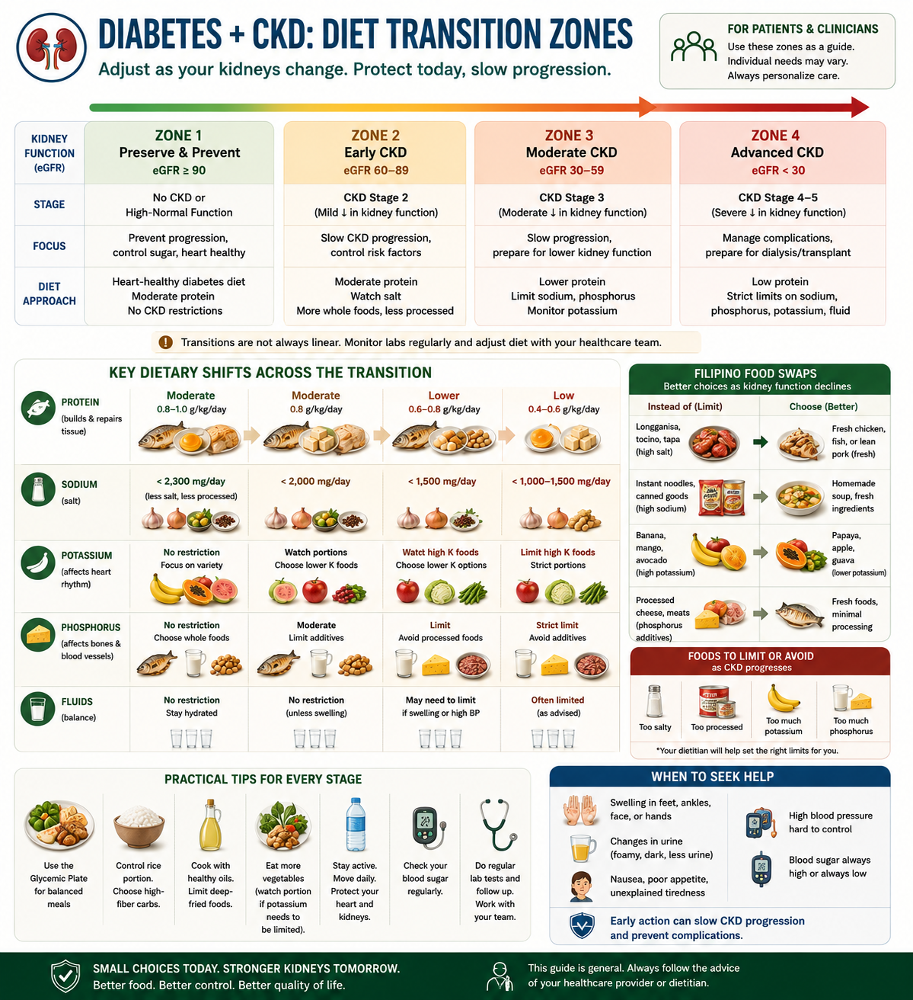
DM + Early CKD (Stage 1–3a)DM + Maagang CKD (Stage 1–3a)DM + Sayo nga CKD (Stage 1–3a)DM + Maagang CKD (Stage 1–3a)
This guide applies fully up to eGFR ≥45. Protein restriction does not begin until eGFR falls below 45, so high-protein diabetic eating is appropriate and beneficial in early CKD. Potassium and phosphorus restrictions are not needed unless labs indicate elevated levels. Do not self-impose kidney restrictions if not prescribed — unnecessary protein restriction in early CKD causes malnutrition.Ang gabay na ito ay ganap na naaangkop hanggang sa eGFR ≥45. Ang paghihigpit sa protina ay hindi nagsisimula hanggang sa bumagsak ang eGFR sa ibaba ng 45. Huwag mag-impose ng kidney restrictions kung hindi prescribed — maaari itong magreresulta sa malnutrition.Kining giya naaangkop nga hingpit hangtod sa eGFR ≥45. Ang paghigpit sa protina dili magsugod hangtod mohulog ang eGFR ubos sa 45. Ayaw mag-impose og kidney restrictions kung dili prescribed — mahimo kining magresulta sa malnutrition.Ing gabay a ini ya ganap a naaangkop hanggang sa eGFR ≥45. Ing paghihigpit sa protina ali nagsisimula hanggang sa bumagsak ing eGFR sa ilalam ning 45. Ding mag-impose ning kidney restrictions nung ali prescribed — maaaring magresulta ini sa malnutrition.
DM + Gout — The Fructose Double ProblemDM + Gout — Ang Dobleng Problema sa FructoseDM + Gout — Ang Doble nga Problema sa FructoseDM + Gout — Ing Dobleng Problema sa Fructose
Fructose raises uric acid by stimulating xanthine oxidase and increasing purine synthesis. For Filipino patients with both diabetes and gout, mangoes, juice drinks, and sweetened beverages are doubly harmful — they spike blood glucose and raise uric acid simultaneously. Prioritise low-fructose fruits: guyabano, calamansi, dalandan. See the Gout & Uric Acid guide.Ang fructose ay nagpapataas ng uric acid. Para sa mga pasyenteng may parehong diabetes at gout, ang mangga at juice drinks ay doubly problematic — nagpapatindi ng blood glucose at uric acid nang sabay. Unahin ang mga prutas na mababa sa fructose.Ang fructose nagpataas sa uric acid. Alang sa mga pasyente nga adunay diabetes ug gout, ang mangga ug juice drinks doubly problematic — nagpasamot sa blood glucose ug uric acid sa usa. Unahon ang mga prutas nga ubos sa fructose.Ing fructose ya nagpapataas ning uric acid. Para king deng pasyenteng atin diabetes at gout, ing mangga at deng juice drinks ya doubly problematic — nagpapatindi ning blood glucose at uric acid nang sabay. Unahin ing deng prutas a mababa sa fructose.
DM + Dyslipidemia — The Most Common CombinationDM + Dyslipidemia — Ang Pinakakaraniwang KombinasyonDM + Dyslipidemia — Ang Pinaka-Kasagarang KombinasyonDM + Dyslipidemia — Ing Pinaka-Karaniwang Kombinasyon
Most Filipino diabetic patients also have elevated triglycerides and low HDL. The dietary overlap is significant: replace lard with canola or olive oil; increase soluble fiber (psyllium husk daily, monggo, oats) to lower LDL by 5–10%; increase omega-3 through galunggong, tanigue, sardinas, and Omacor if prescribed. See the Cholesterol Diet Guide and 2026 ACC/AHA Dyslipidemia guide.Karamihan sa mga Pilipinong pasyenteng may diabetes ay mayroon ding mataas na triglycerides at mababang HDL. Ang solusyon sa diyeta ay nag-o-overlap: palitan ang lard ng canola o olive oil; dagdagan ang soluble fiber; dagdagan ang omega-3 sa pamamagitan ng galunggong at sardinas.Kadaghanan sa mga Pilipinong pasyente nga adunay diabetes adunay usab taas nga triglycerides ug ubos nga HDL. Ang solusyon sa diyeta nagkatapo: ilisan ang lard og canola o olive oil; dugangi ang soluble fiber; dugangi ang omega-3 pinaagi sa galunggong ug sardinas.Karamihan king deng Pilipinong pasyenteng atin diabetes ya mayroon ding matas a triglycerides at mababang HDL. Ing solusyon sa diyeta ya nag-o-overlap: palitan ing lard ning canola o olive oil; dagdagan ing soluble fiber; dagdagan ing omega-3 sa pamamagitan ning galunggong at sardinas.
DM + Obesity — Volume Eating, Not Calorie RestrictionDM + Obesity — Volume Eating, Hindi Paghihigpit sa CalorieDM + Obesity — Volume Eating, Dili Paghigpit sa CalorieDM + Obesity — Volume Eating, Ali Paghihigpit sa Calorie
The most practical strategy is volume eating with low-calorie, high-fiber Filipino foods: large servings of sinigang broth, kangkong, ampalaya, pipino, and kamote tops create satiety without caloric load. Do not reduce food volume so drastically that hunger drives overconsumption of high-GI foods later. Replace half the rice with vegetables first, then reduce rice portion over weeks.Ang pinakapraktikal na estratehiya ay ang volume eating na may mababang calorie at mataas na fiber na pagkaing Pilipino: malaking bahagi ng sinigang broth, kangkong, ampalaya, at kamote tops. Palitan muna ang kalahati ng kanin ng gulay, pagkatapos ay bawasan ang bahagi ng kanin sa loob ng mga linggo.Ang pinaka-praktikal nga estratehiya mao ang volume eating nga adunay ubos nga calorie ug taas nga fiber nga pagkaing Pilipino. Balihi una ang katunga sa kanin og utanon, unya pakutiton ang bahin sa kanin sulod sa mga semana.Ing pinaka-praktikal a estratehiya ya ing volume eating na atin mababang calorie at matas a fiber a pagkaing Pilipino. Palitan muna ing kalahati ning kanin ning gulay, kasunod bawasan ing bahagi ning kanin sa loob ning deng aldo-aldo.
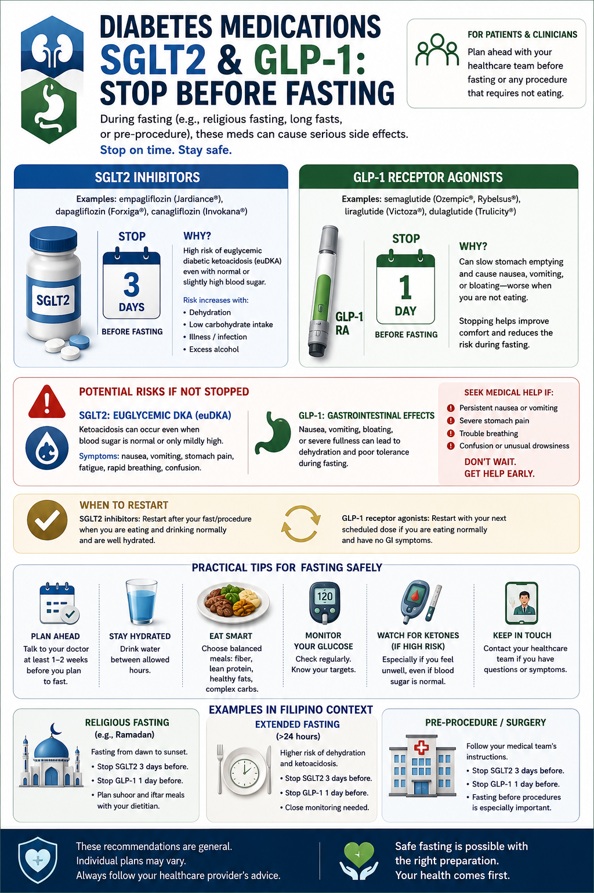
Reading Food Labels: What to Look for as a Filipino Diabetic Patient Pagbabasa ng mga Label ng Pagkain: Ano ang Hahanapin bilang Pilipinong May Diabetes Pagbasa sa mga Label sa Pagkaon: Unsa ang Pangitaon Isip Pilipinong adunay Diabetes Pagbasa ning Deng Label ning Pagkain: Anu ing Hahanapin Bilang Pilipinong Atin Diabetes
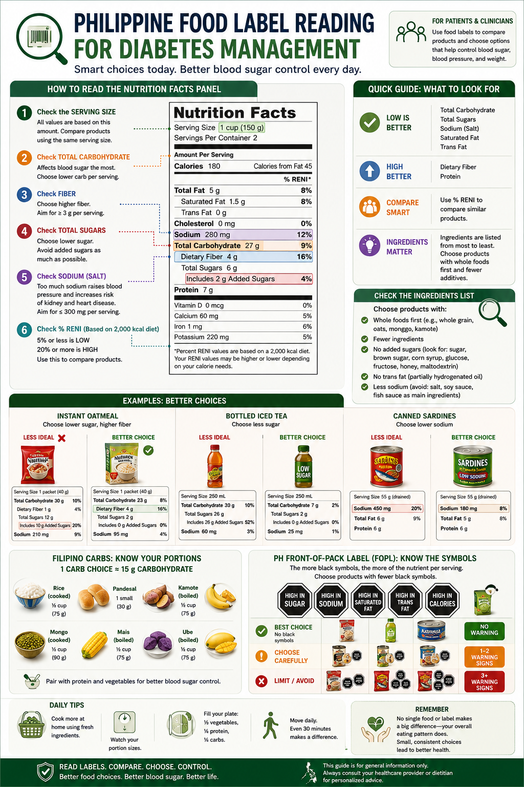
Maltodextrin · Glucose syrup · Corn syrup · High-fructose corn syrup · Dextrose · Sucrose · Fructose · Trehalose · Molasses · Caramel · Honey · Brown sugar · Muscovado · Agave syrupMaltodextrin · Glucose syrup · Corn syrup · High-fructose corn syrup · Dextrose · Sucrose · Fructose · Trehalose · Molasses · Caramel · Honey · Brown sugar · Muscovado · Agave syrupMaltodextrin · Glucose syrup · Corn syrup · High-fructose corn syrup · Dextrose · Sucrose · Fructose · Trehalose · Molasses · Caramel · Honey · Brown sugar · Muscovado · Agave syrupMaltodextrin · Glucose syrup · Corn syrup · High-fructose corn syrup · Dextrose · Sucrose · Fructose · Trehalose · Molasses · Caramel · Honey · Brown sugar · Muscovado · Agave syrup
Philippine FDA "sugar-free" labelling means less than 0.5g sugar per serving. It does not account for: (1) Maltodextrin — GI of 85–105, higher than table sugar; (2) Sugar alcohols (sorbitol, maltitol) — maltitol has GI ~53; (3) Tiny serving sizes — a "serving" may be only 15g but you eat the whole 100g package. "Diabetic" labelled products (Glucerna, Ensure Diabetes Care) serve a clinical role but require portion control.Ang "sugar-free" sa Philippine FDA labelling ay nangangahulugang mas mababa sa 0.5g ng asukal bawat serving. Hindi ito isinasaalang-alang ang maltodextrin (GI 85–105, mas mataas kaysa sa table sugar), sugar alcohols, at maliliit na serving sizes.Ang "sugar-free" sa Philippine FDA labelling nagpasabot og ubos sa 0.5g sa asukal matag serving. Wala kini giisip ang maltodextrin (GI 85–105), sugar alcohols, ug gamay nga serving sizes.Ing "sugar-free" sa Philippine FDA labelling ya nangangahulugang mas mababa sa 0.5g ning asukal bawat serving. Ali ini isinasaalang-alang ing maltodextrin (GI 85–105), sugar alcohols, at maliliit a serving sizes.
Philippines Context: Making This Work in Real Life Konteksto ng Pilipinas: Paggawa Nito sa Tunay na Buhay Konteksto sa Pilipinas: Paghimo Niini sa Tinuod nga Kinabuhi Konteksto ning Pilipinas: Paggawa Nini sa Tunay a Biye
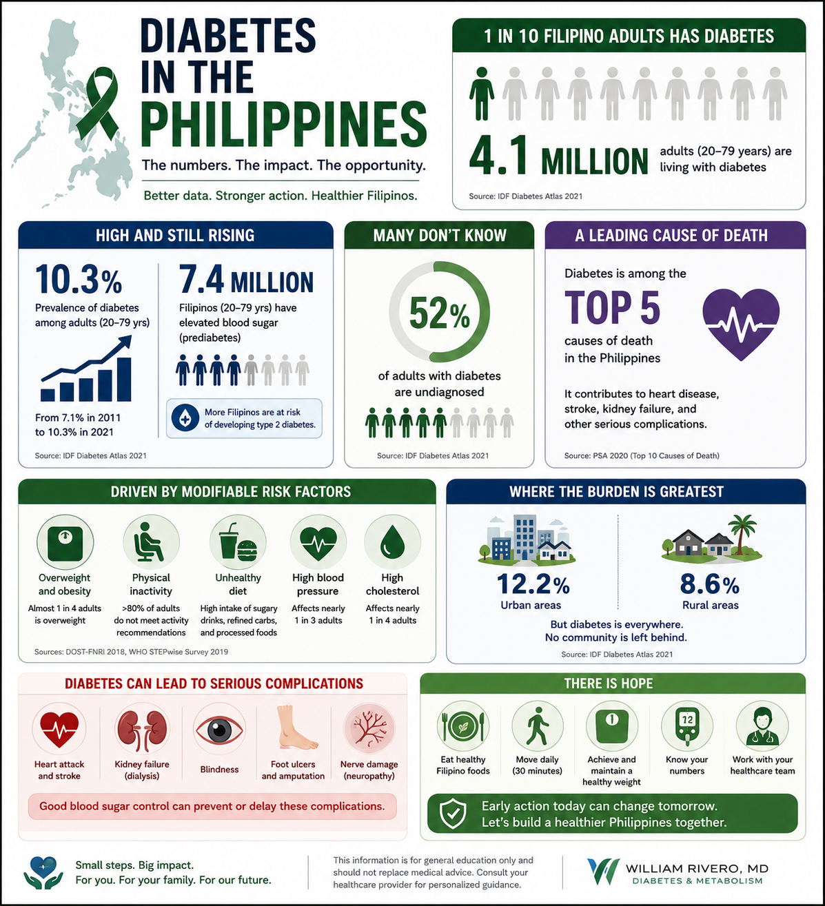
This Diet Should Not Cost MoreAng Diyetang Ito ay Hindi Dapat Mahal Nang HigitKining Diyeta Dili Angay Momahal PagIng Diyetang Ini Ali Dapat Mahal Pang Labih
The most diabetes-friendly Filipino diet is built from palengke staples: galunggong (₱120–160/kg), kangkong (₱20–30/bundle), eggs (₱7–10 each), monggo (₱80–100/kg), bangus (₱150–200/kg), malunggay (₱15–25/bundle). Brown rice costs ₱5–8/kg more than white rice — a difference of ₱15–25 per day. The expensive items in the Filipino diet are the harmful ones: softdrinks, tocino, halo-halo, commercial desserts. Eliminating them saves money and improves glycemic control simultaneously.Ang pinaka-magandang diabetic na diyeta para sa Pilipino ay binubuo ng mga pangunahing pagkain mula sa palengke: galunggong, kangkong, itlog, monggo, bangus, malunggay. Ang brown rice ay ₱5–8/kg lamang ang mahal kaysa sa puting kanin. Ang mga mahal na pagkain sa Filipino diet ay ang nakakapinsala.Ang pinaka-maayo nga diabetic diet para sa Pilipino gitukod sa mga pangunahing pagkaon gikan sa palengke: galunggong, kangkong, itlog, monggo, bangus, malunggay. Ang brown rice ₱5–8/kg lamang ang mahal kaysa sa puting kanin. Ang mga mahal nga pagkaon sa Filipino diet mao ang makadaot.Ing pinaka-maayos a diabetic diet para king Pilipino ya ginawa mula king deng pangunahing pagkain mula sa palengke: galunggong, kangkong, itlog, monggo, bangus, malunggay. Ing brown rice ya ₱5–8/kg lamang ing mahal kaysa sa puting kanin. Ing deng mamahaling pagkain sa Filipino diet ya ing makasama.
PhilHealth Z-Diabetes — Nutritional Counselling Is CoveredPhilHealth Z-Diabetes — Saklaw ang Nutritional CounsellingPhilHealth Z-Diabetes — Nasakop ang Nutritional CounsellingPhilHealth Z-Diabetes — Saklap Ing Nutritional Counselling
Under the PhilHealth Z-Diabetes benefit package, nutritional counselling by a Registered Nutritionist-Dietitian (RND) is a covered service for qualifying patients. Ask your internist or endocrinologist to refer you to an accredited RND at a PhilHealth-accredited facility. A referral is particularly important when your eGFR falls below 60 — when the diabetic diet and the CKD diet must be balanced simultaneously.Sa ilalim ng PhilHealth Z-Diabetes benefit package, ang nutritional counselling ng isang RND ay covered na serbisyo. Hilingin sa iyong internist o endocrinologist na i-refer kayo sa isang accredited RND. Ang referral ay lalo na mahalaga kapag ang inyong eGFR ay bumaba sa ibaba ng 60.Sa ilalim sa PhilHealth Z-Diabetes benefit package, ang nutritional counselling sa usa ka RND covered nga serbisyo. Pangayoon sa imong internist o endocrinologist nga i-refer ka sa usa ka accredited RND. Ang referral labi ka importante kung ang imong eGFR mohulog ubos sa 60.Sa ilalim ning PhilHealth Z-Diabetes benefit package, ing nutritional counselling ning metung a RND ya covered a serbisyo. Hilingin sa internist o endocrinologist mo a i-refer kayo sa metung a accredited RND. Ing referral ya lalo a mahalaga nung ing eGFR mo ya bumaba sa ilalam ning 60.
For Filipino Muslims — Ramadan and DiabetesPara sa mga Pilipinong Muslim — Ramadan at DiabetesPara sa mga Pilipinong Muslim — Ramadan ug DiabetesPara king Deng Pilipinong Muslim — Ramadan at Diabetes
Sulfonylureas (glimepiride, glibenclamide) are high-risk during Ramadan — daytime fasting creates prolonged hypoglycemia risk requiring dose timing adjustment. SGLT2 inhibitors carry low risk of euglycemic DKA during extended fasting — discuss with your doctor 2–4 weeks before Ramadan. Metformin and DPP-4 inhibitors are lower-risk but still require supervision. A pre-Ramadan medication review is strongly recommended.Ang mga sulfonylurea ay mataas ang panganib sa panahon ng Ramadan — ang pag-aayuno sa araw ay lumilikha ng panganib ng hypoglycemia na nangangailangan ng pagsasaayos ng oras ng dosis. Ang SGLT2 inhibitors ay may mababang panganib na euglycemic DKA sa matagal na pag-aayuno. Lubos na inirerekomenda ang pagsusuri ng gamot bago ang Ramadan.Ang mga sulfonylurea mataas ang peligro sa panahon sa Ramadan — ang pag-ayo sa adlaw naghimo og peligro sa hypoglycemia. Ang SGLT2 inhibitors adunay ubos nga peligro sa euglycemic DKA. Lubos nga girekomenda ang pagsusuri sa tambal sa wala pa ang Ramadan.Ing deng sulfonylurea ya matas a panganib sa panahon ning Ramadan — ing pag-aayuno sa aldo ya lumilikha ning panganib ning hypoglycemia. Ing SGLT2 inhibitors ya atin mababang panganib ning euglycemic DKA. Lubos a inirerekomenda ing pagsusuri ning gamot bago ing Ramadan.
OFWs — Managing Your Filipino Diabetic Diet AbroadMga OFW — Pamamahala ng Diyeta sa Ibayong DagatMga OFW — Pagdumala sa Diyeta sa Gawas sa NasodDeng OFW — Pamamahala ning Diyeta sa Ibang Bansa
The core principles translate directly to any country. In the Middle East: basmati rice (GI 50–58) is widely available and already better than sinandomeng; lentils and chickpeas are cheap, excellent low-GI proteins. In Hong Kong and the UK: brown rice and cauliflower rice are supermarket staples. For OFW balikbayan celebrations: apply the same rules — vegetables first, rice last, small rice portion.Ang mga pangunahing prinsipyo ay direktang nailalapat sa anumang bansa. Sa Gitnang Silangan: ang basmati rice (GI 50–58) ay mas mahusay kaysa sa sinandomeng. Sa Hong Kong at UK: ang brown rice ay nakikita sa mga supermarket. Para sa mga pagdiriwang ng balikbayan: parehong mga panuntunan — gulay muna, kanin sa huli.Ang mga pangunahing prinsipyo direkta nga mapaplano sa bisan unsang nasod. Sa Middle East: ang basmati rice (GI 50–58) mas maayo kaysa sa sinandomeng. Sa Hong Kong ug UK: ang brown rice makita sa mga supermarket. Para sa mga pagdayeg sa balikbayan: samang mga lagda — utanon una, kanin sa katapusan.Ing deng pangunahing prinsipyo ya direktang nailalapat sa anumang bansa. Sa Middle East: ing basmati rice (GI 50–58) ya mas mahusay kaysa sa sinandomeng. Sa Hong Kong at UK: ing brown rice ya makita sa deng supermarket. Para king deng pagdiriwang ning balikbayan: parehong panuntunan — gulay muna, kanin sa huli.
🧮 Filipino Meal Glycemic Load Estimator 🧮 Filipino Meal Glycemic Load Estimator 🧮 Filipino Meal Glycemic Load Estimator 🧮 Filipino Meal Glycemic Load Estimator
Select the foods you typically eat in a day. The calculator estimates your daily glycemic load, assesses your carbohydrate distribution, and identifies the highest-GL item with a suggested swap.Piliin ang mga pagkaing karaniwang kinakain mo sa isang araw. Ang calculator ay magtataya ng iyong araw-araw na glycemic load at tutukuyin ang pinakamataas na GL item na may mungkahing kapalit.Pilia ang mga pagkaon nga kasagaran mong gikaon sa usa ka adlaw. Ang calculator mobanabana sa imong adlaw-adlaw nga glycemic load ug mokuha sa pinakataas nga GL item.Piliin ing deng pagkaing karaniwang kinakain mo sa metung a aldo. Ing calculator ya magtataya ning aldo-aldo a glycemic load mo at tutukuyin ing pinakamatas a GL item.
How to use: Add the foods you typically eat in one day. The calculator estimates your total daily glycemic load, shows your carbohydrate distribution, and flags your highest-GL item with a suggested swap.Paano gamitin: Idagdag ang mga pagkaing karaniwang kinakain mo sa isang araw. Tinataya ng calculator ang iyong kabuuang araw-araw na glycemic load at nagbibigay ng pinakamataas na GL item na may mungkahing kapalit.Unsaon paggamit: Idugang ang mga pagkaon nga kasagaran mong gikaon sa usa ka adlaw. Gibanabana sa calculator ang imong total nga adlaw-adlaw nga glycemic load ug naghatag sa pinakataas nga GL item.Paano gamitin: Idagdag ing deng pagkaing karaniwang kinakain mo sa metung a aldo. Tinataya ning calculator ing iyong kabuuang aldo-aldo a glycemic load at nagbibigay ning pinakamatas a GL item.
⬇ Download: My Filipino Diabetic Food Guide ⬇ I-download: Ang Aking Gabay sa Pagkaing Pilipino para sa Diabetes ⬇ I-download: Ang Akong Giya sa Pagkaing Pilipino alang sa Diabetes ⬇ I-download: Ing Gabay Ko king Pagkaing Pilipino para king Diabetes
A printable A4 quick-reference card — designed for your refrigerator door, clinic waiting room, or to share via Viber and Messenger. Includes the Filipino Glycemic Plate, the Rice GI Spectrum, the Traffic Light Food Guide, the Meal Sequencing Rule, and your daily targets.Isang napi-print na A4 quick-reference card — para sa pintuan ng ref, silid ng paghihintay sa klinika, o para ibahagi sa Viber at Messenger.Usa ka napi-print nga A4 quick-reference card — para sa pintuan sa ref, sala sa paghulat sa klinika, o para ipaambit pinaagi sa Viber ug Messenger.Metung a napi-print a A4 quick-reference card — para king pintuan ning ref mo, sala ning paghihintay sa klinika, o para ibahagi sa Viber at Messenger.